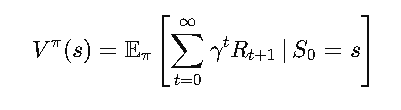
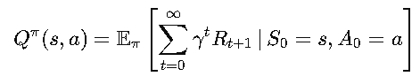

Introduction to Markov Decision Processes (MDPs):
~ Policies: The Agent’s Game Plan ~
Now that we’ve got the basics of Markov Decision Processes (MDPs) down, it’s time to talk strategy—Policies. If MDPs are the rules of the game, a policy is the agent’s playbook. It’s the blueprint for how the agent makes decisions at every step, guiding its actions in the pursuit of maximum rewards. Think of it as the “game plan” that turns raw potential into winning moves.
What is an MDP?
At its core, an MDP is a way to model sequential decision-making. You’re an agent in an environment, making decisions (or "actions") that affect the environment’s state and, in turn, determine the rewards you receive. The ultimate goal? Choose actions that maximize your rewards over time.
What is a Policy?
A policy (𝜋) is essentially a mapping from states to actions. For every state the agent finds itself in, the policy tells it what to do next. There are two kinds of policies:
- Deterministic Policy:
Always maps a state to a specific action.
- Example: In a maze, if the agent is in square (2,3), the policy might always say “go right.”
- Analogy: It’s like a GPS that gives you a single, fixed route to your destination.
- Stochastic Policy:
Maps a state to a probability distribution over actions.
- Example: In square (2,3), the policy might suggest “go right” with a 70% probability and “go left” with a 30% probability.
- Analogy: It’s like choosing a restaurant where you mostly stick to your favorites but occasionally try something new.
Why Policies Matter
The ultimate goal of reinforcement learning is to find the optimal policy—the one that maximizes the agent’s cumulative reward over time. A good policy ensures the agent navigates the environment efficiently, avoids pitfalls (like falling off cliffs, hint hint), and achieves its goal with maximum success.
Evaluating a Policy
To figure out how good a policy is, we use two key concepts: Value Functions. These are like report cards for policies, grading how well the agent is expected to perform when following a specific plan.
- State-Value Function (Vπ (s) )
This measures how good it is to be in a specific state 𝑠 when following policy 𝜋. In other words, it tells us the expected total reward starting from state 𝑠 and sticking to π.
Mathematically :

Where:- γ is the discount factor, controlling how much we care about future rewards.
- Rt+1 is the reward at time t+1.
Fun Analogy: It’s like looking at a map and seeing which route offers the best scenery and shortest travel time combined.
- Action-Value Function (Qπ (s, a) )
This measures how good it is to take a specific action 𝑎 in a specific state 𝑠, while following policy 𝜋 afterward.
Mathematically :

Fun Analogy: Imagine you’re in a food court, deciding which restaurant to try. Qπ (s, a) is like predicting how much you’ll enjoy a meal at a specific restaurant if you stick with your regular dining habits afterward.
Optimal Policy and Value Functions
The goal of reinforcement learning is to find the optimal policy (𝜋*) that maximizes the expected rewards. For the optimal policy, the value functions are denoted as:
- Optimal State-Value Function: V*(s)
- Optimal Action-Value Function: Q* (s, a)
These represent the best possible outcomes the agent can achieve from any state or state-action pair.
A Simple Example: The Cliff Walking Problem
Let’s imagine our agent is navigating the infamous Cliff Walking Environment.
- States: The grid cells in the environment.
- Actions Moving up, down, left, or right.
- Rewards:
- −1 for each step.
- −100 if the agent falls off the cliff.
- +0 for reaching the goal.
Policies in Action:
- A bad policy might wander aimlessly and repeatedly fall off the cliff.
- A good policy will hug the safe edge, minimizing penalties while reaching the goal.
- The optimal policy finds the fastest, safest path to the goal with minimal risk.
How Do We Improve a Policy?
Two main approaches help improve policies:
- Policy Evaluation: Compute Vπ(s) and Qπ (s, a) to assess how well the current policy performs.
- Policy Improvement: Adjust the policy based on value function insights to make better decisions.
Together, these steps form the foundation of Policy Iteration, a process for finding the optimal policy.
What’s Next?
In the next section, we’ll roll up our sleeves and dive deeper into Policy Evaluation and Policy Iteration. We’ll break down how to compute value functions, refine policies, and implement these concepts in the Cliff Walking Environment. Ready to see MDPs in action? Let’s keep the momentum going! 🚀✨